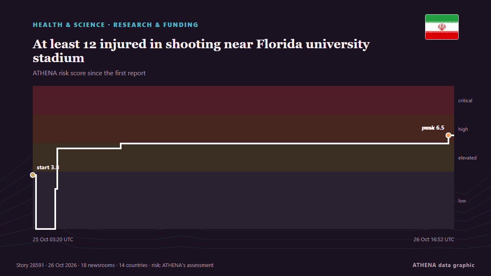

At least 12 injured in shooting near Florida university stadium

Police count six adults, six juveniles among injured as initial findings show physical altercation preceded shooting. من Express Tribune
نشرته بشكل مستقل 18 مصدرًا في 14 دولة منذ 25 أكتوبر، وأول من نشره Express Tribune؛ والتغطية لا تزال تتسع. يقدّر ATHENA الخطر بأنه مرتفع (6.6/10)، ويعود ذلك أساسًا إلى خطورة الضرر الموصوف ونطاقه الجغرافي والقطاعي. الثقة 87٪ (مرتفعة)، وعدد المصادر المستقلة المؤكِّدة: 18، بمتوسط موثوقية للمصادر يبلغ 75٪. من نقل الخبر: 5 وسائل إعلام في المملكة المتحدة · United Kingdom, 2 وسائل إعلام في الصين · China, 2 وسائل إعلام في الهند · India. امتدت التغطية من 25 أكتوبر إلى 26 أكتوبر، على مدى 39 ساعة.
لماذا يهم: قد تغيّر التطورات الصحية والعلمية مخاطر الصحة العامة وأولويات البحث والتنظيم.
ما الذي تغيّر: 4 تقارير جديدة من 4 غرف أخبار خلال 24 ساعة حتى 26 أكتوبر.
العنوان الأول: Eleven shot near Florida A&M university in Tallahassee
تُعرض العناوين بالإنجليزية كما نُشرت.
نظرة سريعة
اختير وقُيِّم وكُتب وفق منهجية ATHENA المنشورة. لا يتدخل أي محرر في الأحداث بعينها. كيف يُنتَج ›
| 25 Oct 01:29 UTC | 2 |
|---|---|
| 25 Oct 03:29 UTC | 5 |
| 25 Oct 05:29 UTC | 9 |
| 25 Oct 07:29 UTC | 1 |
| 25 Oct 09:29 UTC | 0 |
| 25 Oct 11:29 UTC | 0 |
| 25 Oct 13:29 UTC | 0 |
| 25 Oct 15:29 UTC | 2 |
| 25 Oct 17:29 UTC | 0 |
| 25 Oct 19:29 UTC | 0 |
| 25 Oct 21:29 UTC | 0 |
| 25 Oct 23:29 UTC | 0 |
| 26 Oct 01:29 UTC | 0 |
| 26 Oct 03:29 UTC | 0 |
| 26 Oct 05:29 UTC | 0 |
| 26 Oct 07:29 UTC | 0 |
| 26 Oct 09:29 UTC | 0 |
| 26 Oct 11:29 UTC | 1 |
| 26 Oct 13:29 UTC | 0 |
| 26 Oct 15:29 UTC | 3 |
| 25 Oct 03:20 UTC | 3.8 |
|---|---|
| 25 Oct 03:38 UTC | 0.0 |
| 25 Oct 05:19 UTC | 2.8 |
| 25 Oct 05:30 UTC | 5.6 |
| 25 Oct 11:10 UTC | 6.0 |
| 26 Oct 16:20 UTC | 6.5 |
| 26 Oct 16:52 UTC | 6.6 |
لماذا هذه الأرقام
الأهمية
الخطر
الثقة
التغطية — من نشر الخبر ومتى
العنوان كما نُشر · يفتح الأصل- Express Tribune · باكستان · Pakistan11 shot near Florida A&M university in Tallahassee
- Xinhua (English) — page reader · الصين · ChinaUrgent: Police investigating shooting in Florida university
- Anadolu Agency (English) · تركيا · Turkey11 shot, 1 more injured near Florida university stadium: Police
- Mehr News (English) · إيران · IranVIDEO: Shooting at Florida State University, dozens injured
- Times of India · الهند · India6 children among 12 injured in shooting near Florida university stadium
- NDTV · الهند · India12, Including 6 Children, Injured In Shooting Near Florida University
- Cyprus Mail · قبرص · CyprusEleven shot near Florida A&M university in Tallahassee
- The Jerusalem Post · إسرائيل · IsraelAt least 12 injured in late-night shooting near Florida A&M University stadium in Tallahassee
- Arab News · المملكة العربية السعودية · Saudi ArabiaEleven shot near Florida A&M university in Tallahassee
- Xinhua (English) — page reader · الصين · ChinaAt least 12 injured in shooting near Florida university stadium
- Gulf News · الإمارات العربية المتحدة · United Arab EmiratesAt least 12 people injured in shooting near a football stadium in Florida
- The Guardian · المملكة المتحدة · United KingdomTwelve injured, including six juveniles, in shooting near Florida university
- Daily Mirror · سريلانكا · Sri LankaAt least 12 people injured in shooting near a football stadium in Florida
- Asharq Al-Awsat (English) · المملكة العربية السعودية · Saudi ArabiaEleven Shot near Florida A&M University in Tallahassee
- The Straits Times · سنغافورة · Singapore11 people shot at homecoming party near Florida university campus
- The Independent · المملكة المتحدة · United KingdomAt least 12 injured, including six kids, after mass shooting near Florida A&M University
- Khaama Press · أفغانستان · Afghanistan12 Injured, Including Six Minors, in Shooting Near Florida A&M University
- The Independent · المملكة المتحدة · United Kingdom15-year-old boy arrested after 11 are shot, including kids, near Florida A&M stadium
- The Guardian · المملكة المتحدة · United KingdomFifteen-year-old arrested in shooting near Florida university that injured 12
- BBC News · المملكة المتحدة · United KingdomPolice arrest teenager after shooting that injured 12, including children, in Florida
- Nile Post · أوغندا · UgandaPolice arrest teenager after shooting that injured 12, including children, in Florida